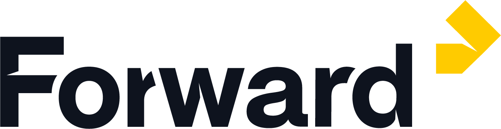
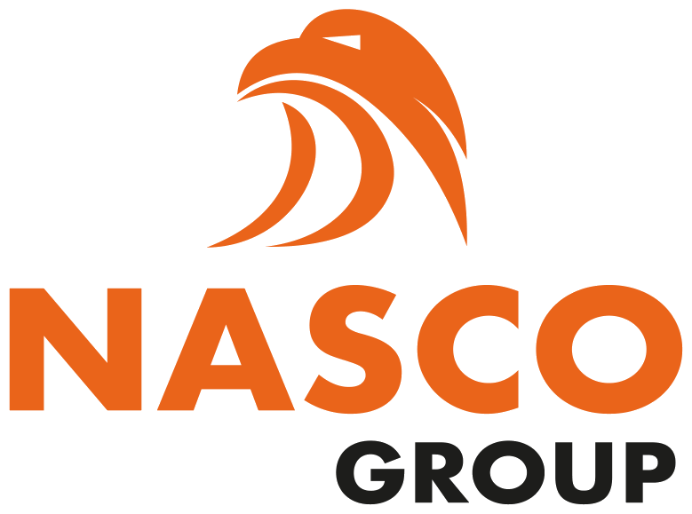
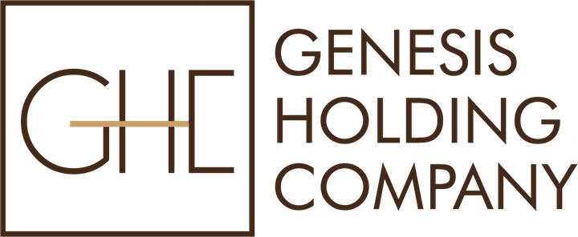

À propos






ARMD est un cabinet de conseil en intelligence économique et communication stratégique dédié aux groupes industriels et aux institutions financières africaines.
6
Expertises-métiers
du lobbying au traitement de données
du lobbying au traitement de données
8
Marchés couverts
en Afrique subsaharienne
en Afrique subsaharienne
8+
Années
d'expérience
d'expérience
3
Territoires d'implantation
Abidjan · Paris · Douala
Abidjan · Paris · Douala
1 000+
Retombées médias
cumulées pour nos clients
cumulées pour nos clients
+ $200 M
De financements
obtenus par nos clients
obtenus par nos clients